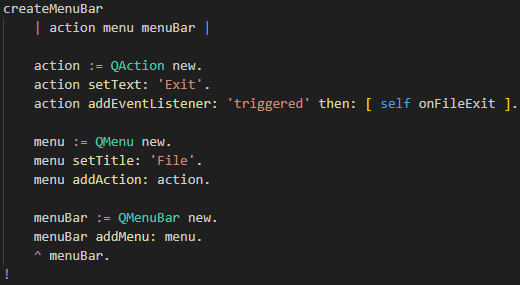

Scroll down to the method
createMenuBar that looks like this:

This method creates the menu bar in the main app window.
The menu is created buttom-up.
First an Exit menu item (
QAction) is created
with a method call attached to the event
'triggered' .
Then the menu itemd is added to a newly created File menu.
Finally the menu is added to a newly created menu bar.